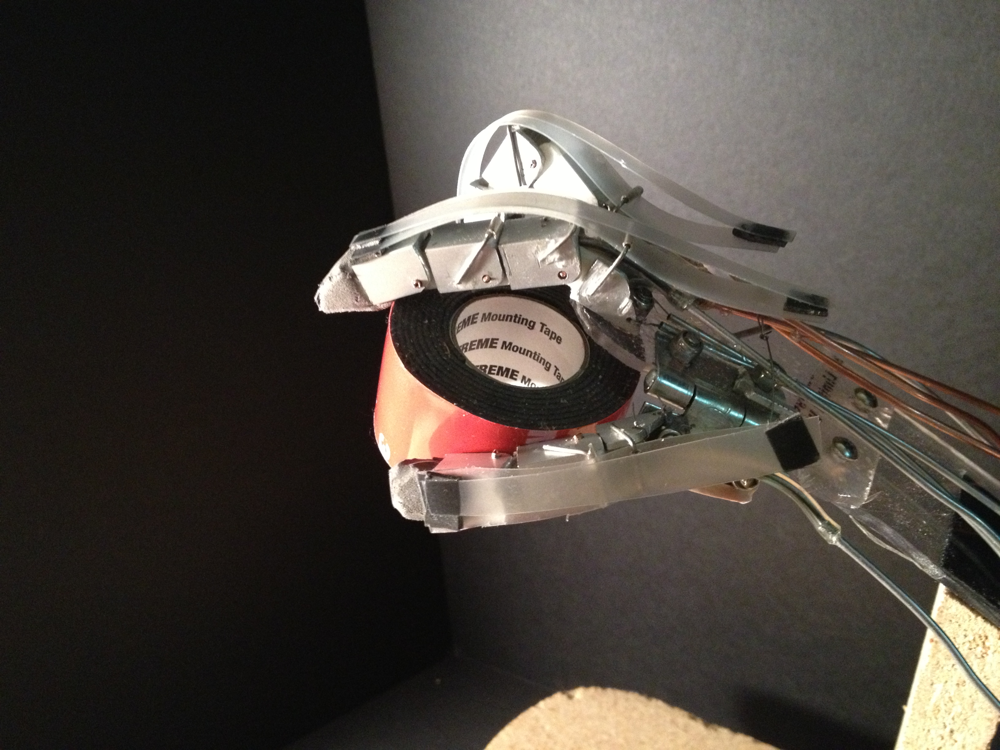
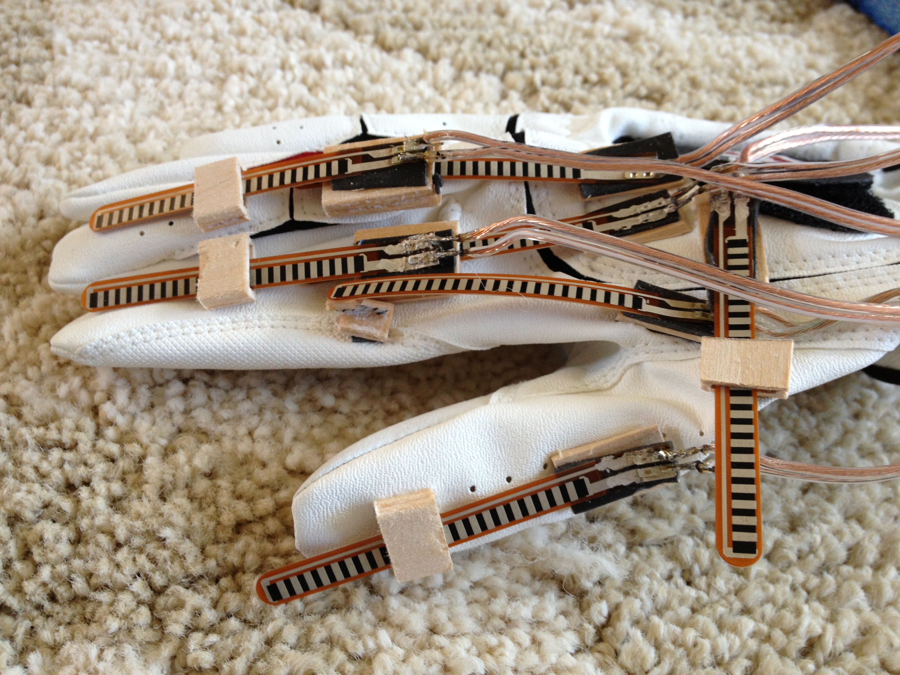
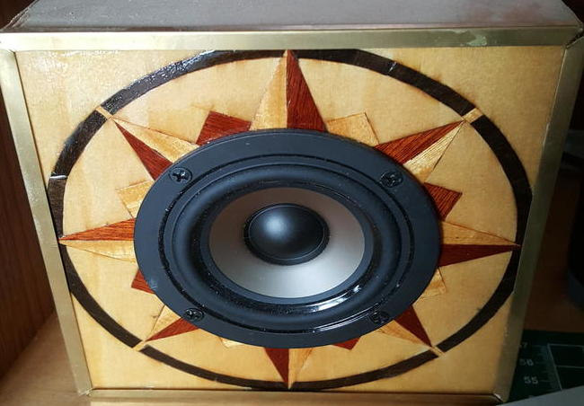
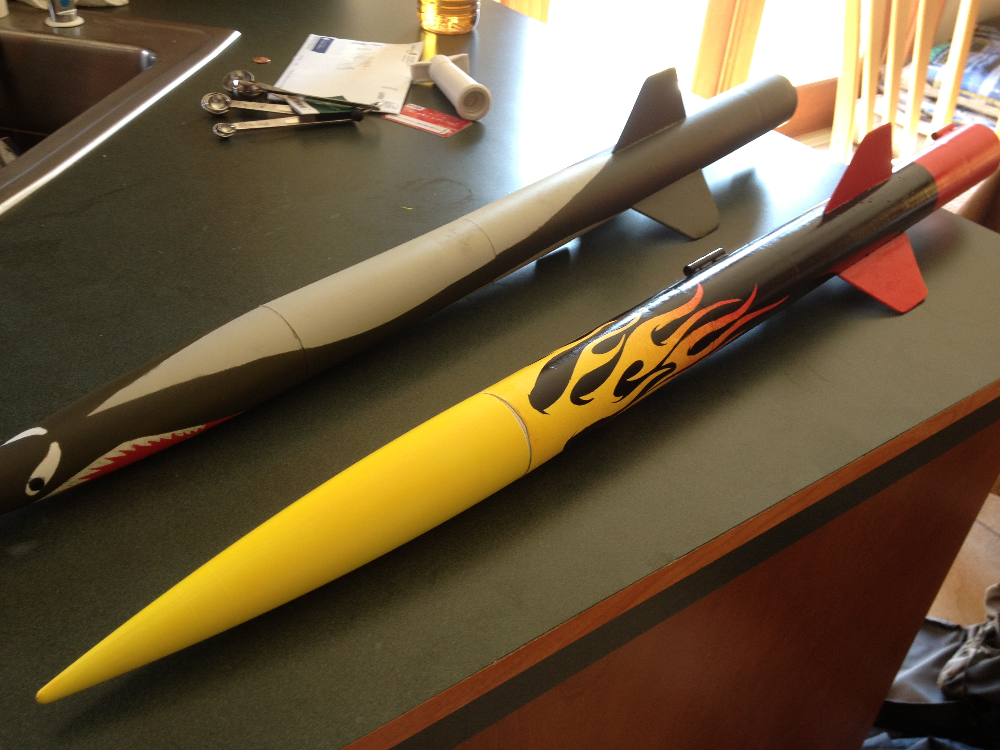
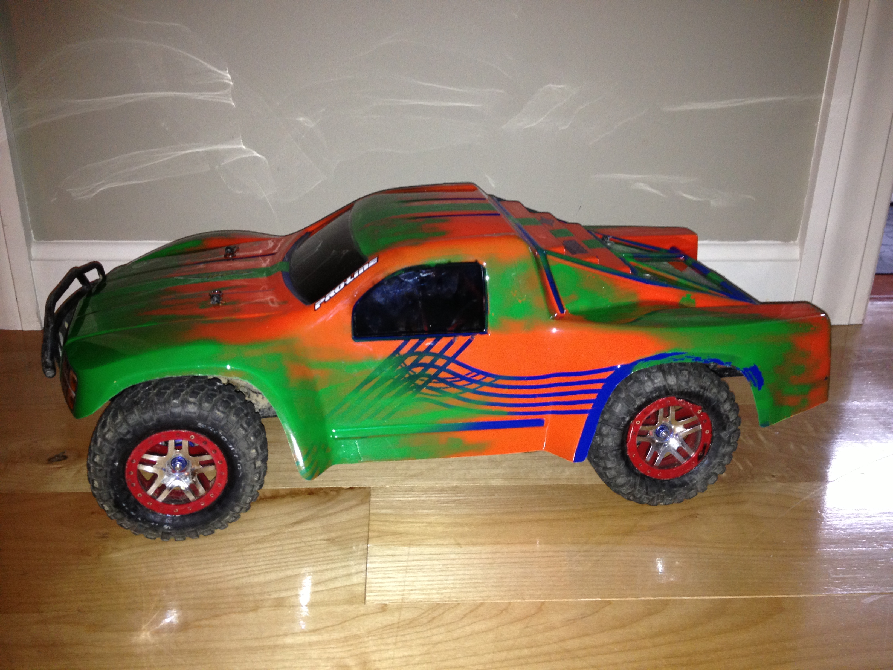
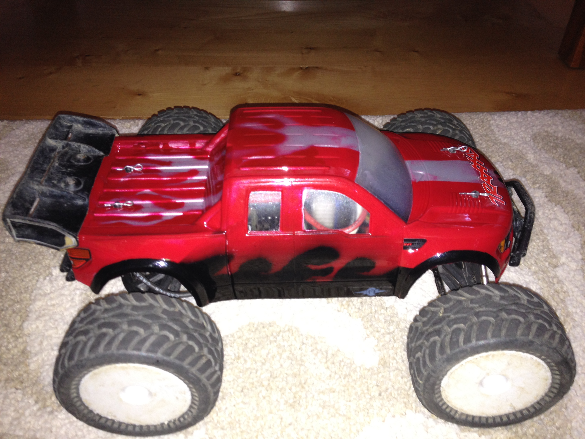
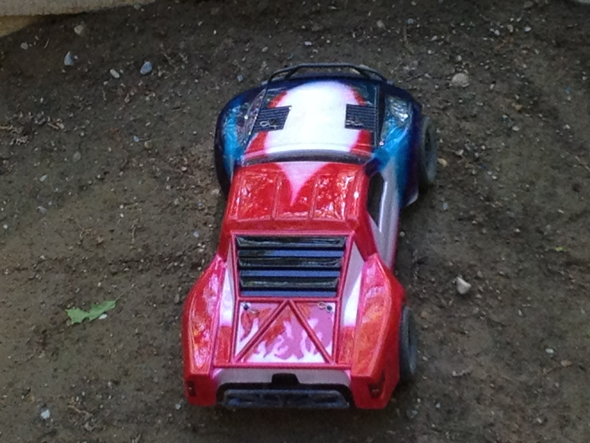

Other Projects

Robotic Hand
My junior year science fair project was to build a robotic hand which mimicked the motions of a human wearing a glove. During this project, I was introduced to Arduinos, 3D printing, and designing for manufacturability.

Robotic Hand
The hand would mimic this glove by reading the bend in each of the bend sensors on the glove, then translating that to an angle for servos which controlled the hand.

Speakers
After a year at college, I decided that I wanted speakers for my dorm room, but I wanted them to be a nice feature rather than something I wanted to hide. I used speakers which a classmate had used in a project and built speaker boxes with a compass rose inlay that worked out really well.

Model Rockets
During freshmen and sophomore year of high school, I was on a TARC model rocketry team, and I helped build and did all of the painting on these two rockets which were designed to carry two eggs to 800 ft. We were pretty successful, getting within a few feet of the target altitude.

RC Cars
I have had hobby grade RC cars since I was little, and I have always enjoyed taking them apart, upgrading them, waterproofing them, and painting them

RC Cars
This was one of my first attepts at airbrushing. Some parts came out nicely, but some of the features were too small for me to get right
